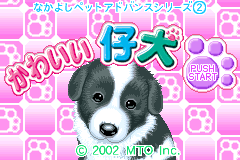

Nakayoshi Pet Advance Series 2 - Kawaii Koinu (Japan)
EEPROM 64K
Cartridge Identity
- Game Code
AI7J(FamilyAI7)- Header Title
KAWAII DOG- Maker / Revision
BL/ rev0- ROM Size
- 4.0 MiB (4,194,304 B)
- Save Media
EEPROM 64K- SHA-256
f55495208f82a349c19e008a45791a157d050008ad90efe63edb408479e8d47b- Engine / SDK Group
comm-002(145 families)
Screenshots


Observed Battery Save Layout
- Fill Byte & Active Size
0xFFfill · 1,016–1,016 / 8,192 B active (entropy 0.00 bits/B)- Active Offset Ranges
0x0–0x3F7(1 total)- ASCII Magic / Headers
- None detected
- Observed Variable Regions
- 0 bytes across 0 spans: None
- Candidate Checksum/Counter Spans
- None
ROM Assets, Compression & Audio
- BIOS Compression
- LZ77 (
0x10): 2 streams · RLE (0x30): 33 streams - ROM Pointer Tables
- 14 tables (0 pointing to validated compressed streams)
- SDK Backup Tags
EEPROM_V122